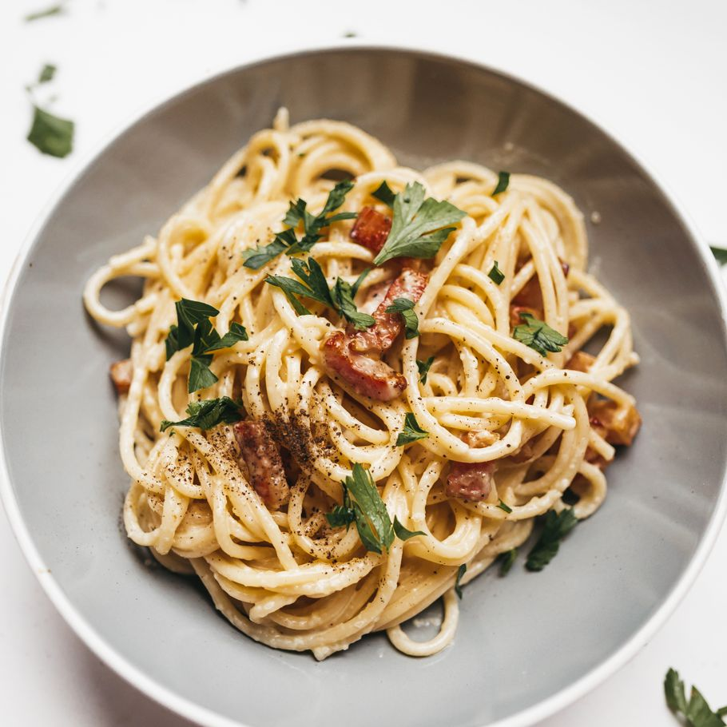

Spaghetti Carbonara

A favorite for the lazy chef. Arguably one of the easiest pasta dishes
you will ever make!
Ingredients:
- 8 ounces spaghetti
- 2 eggs
- 1/2 cup grated Parmesan
- 4 slices bacon, diced
- 4 cloves garlic, minced
- Salt and freshly ground black pepper to taste
- 2 tablespoons chopped fresh parsley leaves
Directions:
- In a pot of boiling salted water, cook pasta according to package
instructions. Save 1/2 cup water and drain once cooked.
- In a bowl, whisk the eggs and parmesan together.
- Heat a skillet over medium high heat. Add bacon and cook until crisy;
approximately 6-8 minutes. Save the excess fat.
- Stir in garlic in skillet for about 1 minute. Reduce heat to low.
- Quickly stir in pasta and egg mixture and gently toss to fully combine;
season with salt and pepper to taste. Add the saved pasta water, one spoonful
at a time, until the desired consistency is reached.
- Garnish with parsley and serve.
Return to recipes